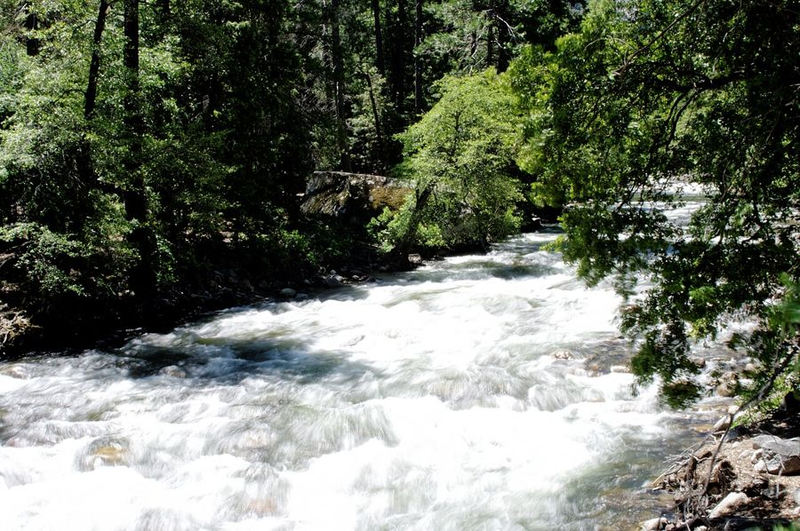
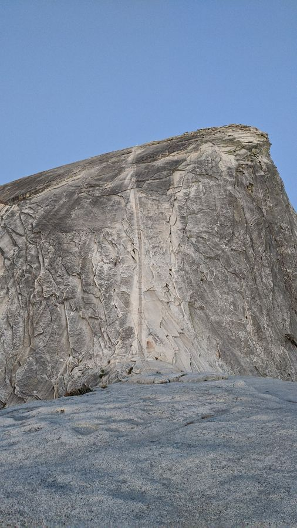
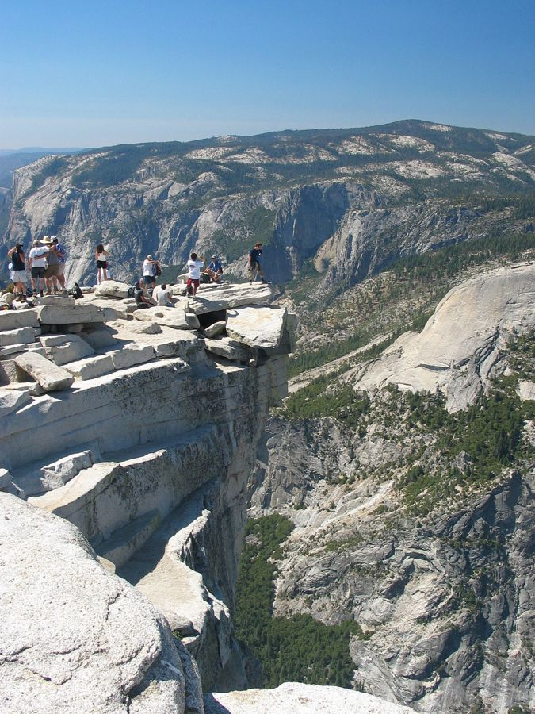

The route starts here at the valley floor, about 4,000 feet up. Follow the Mist Trail toward Half Dome.
Photo: Emmanuel DYAN from Paris, France · CC BY 2.0 · Wikimedia Commons

After Little Yosemite Valley the trail climbs the granite of Sub Dome. The cables are visible on the face ahead.
Photo: CADetourDan · CC BY-SA 4.0 · Wikimedia Commons

You have reached the summit of Half Dome, about 4,800 feet above where you started. The final stretch climbs the cables.
Photo: Daniel Schwen · CC BY-SA 3.0 · Wikimedia Commons